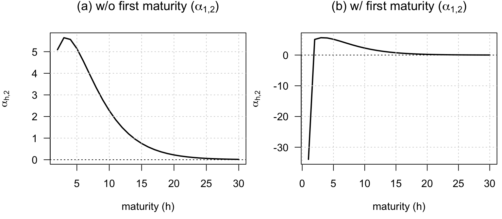
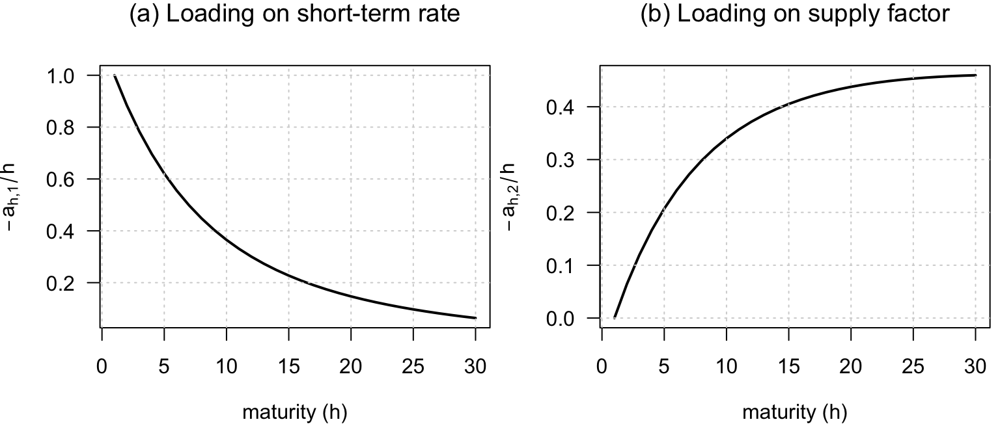
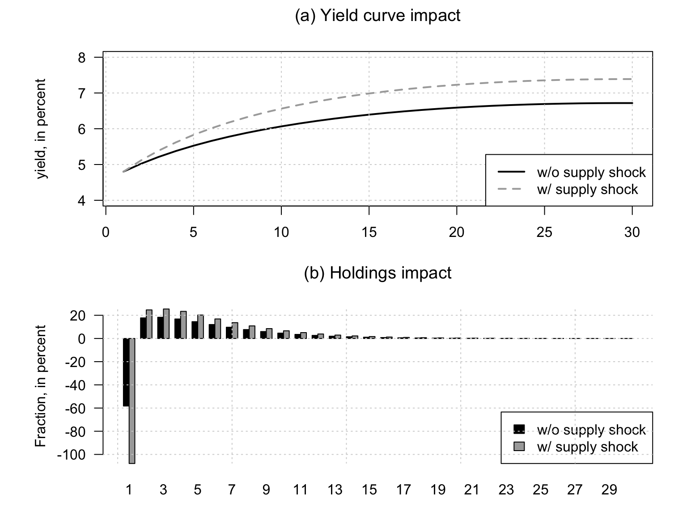
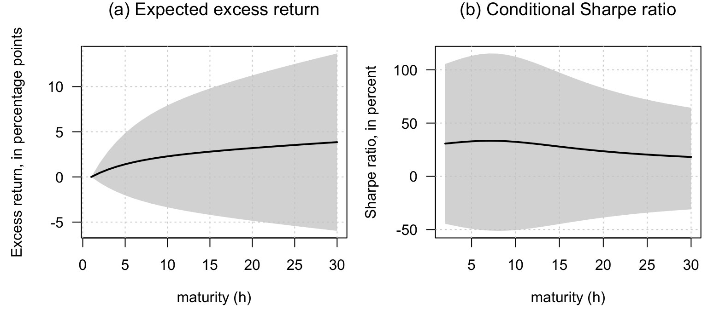
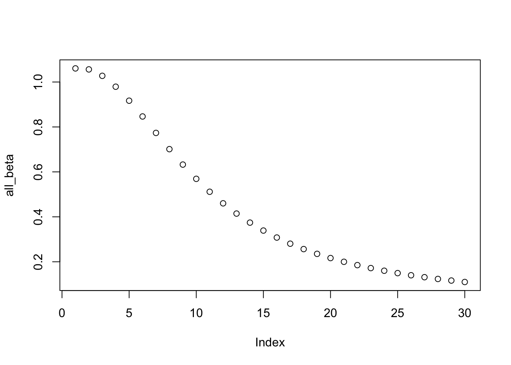
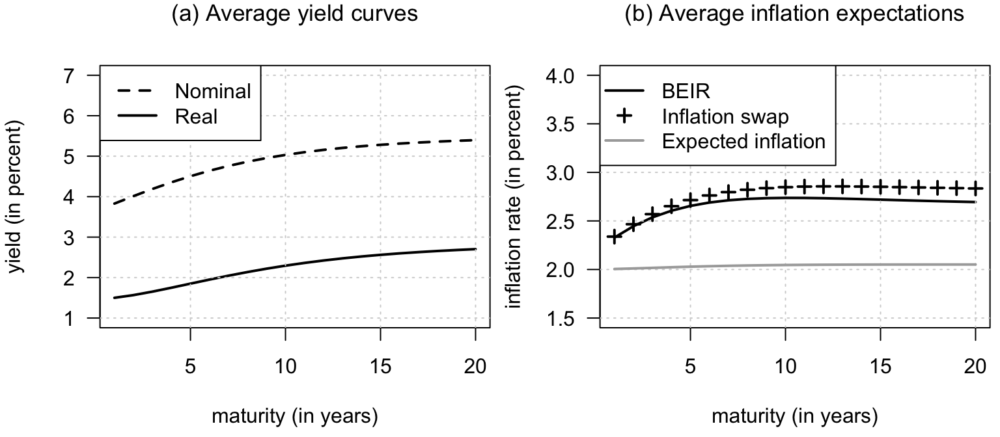
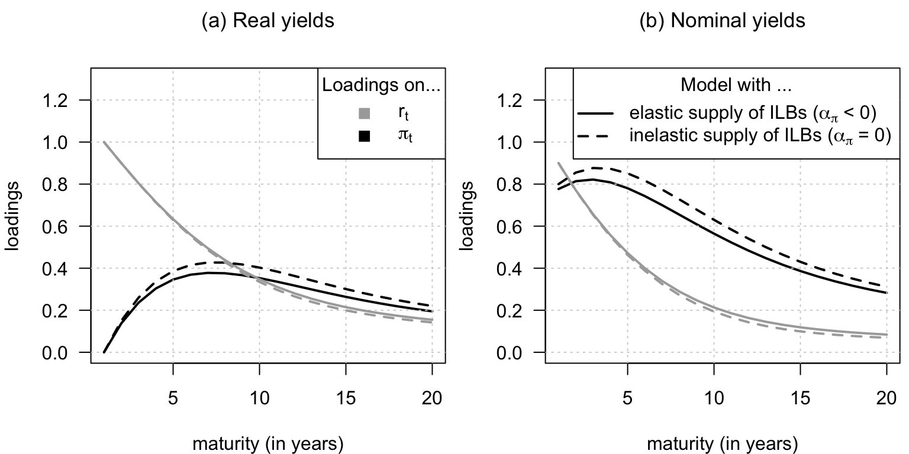
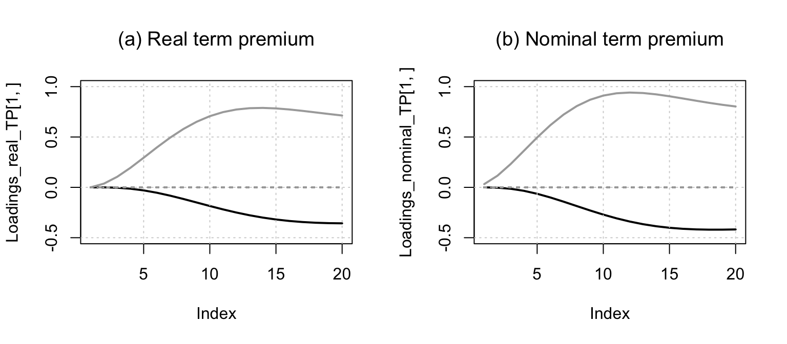

Chapter 12 Preferred-habitat model
12.1 The preferred-habitat specification and the maturity-demand function
This example introduces the preferred-habitat specification and the maturity-demand function.
# Purpose: This example introduces the preferred-habitat specification and the maturity-demand
# function
library(DTAM)
n <- 2 # number of factors
H <- 30 # maximum maturity
# Calibration: (see Table 1 in Vayanos-Vila):
kappa_r <- .125
sigma_r <- .0146
kappa_beta <- .053
a.theta <- 3155
a.alpha <- 35.3
delta_alpha <- .297
delta_theta <- .307
alpha <- 5.21
r_bar <- 4.8
a.theta0 <- 289
# Specif of short-rate:
a1 <- matrix(c(1,rep(0,n-1)),ncol=1) # The first factor is r_t
b1 <- r_bar/100 # minus mean of short-term rate
# Specify factors' dynamics:
mu <- matrix(0,n,1)
Phi <- matrix(0,n,n)
Phi[1:2,1:2] <- diag(c(1-kappa_r,1-kappa_beta))
Sigma <- sigma_r^2*diag(n) # since sigma_beta = sigma_r
# Specify supply of bonds:
a <- a.alpha/alpha
theta <- a.theta/a
theta0 <- a.theta0/a
Beta <- matrix(theta0 * (exp(-delta_alpha*(1:H)) -
exp(-delta_theta*(1:H))),H,1)
Alpha <- matrix(0,H,n)
Alpha[,2] <- theta * (exp(-delta_alpha*(1:H)) -
exp(-delta_theta*(1:H)))
xi <- alpha * matrix(1:H * exp(-delta_alpha*(1:H)),H,1)
model_VV <- list(gamma = a,mu = mu,Phi = Phi,Sigma = Sigma,
alpha = Alpha,beta = Beta,xi = xi,a1 = a1,b1 = b1)
par(mfrow=c(1,2))
par(plt=c(.2,.98,.25,.85))
plot(2:H,
las=1,
Alpha[2:H,2],type="l",lwd=2,
xlab=expression(paste("maturity (",h,")",sep="")),ylab=expression(alpha[2*','*h]),
main=expression(paste("(a) w/o first maturity (",alpha[1*','*2],")",sep=""))
)
grid()
abline(h=0,col="black",lty=3)
# Solve the model to get the right specification of alpha_1 and beta_1:
RES <- solve_PH_TSM(model_VV)
Alpha <- RES$alpha
Beta <- RES$beta
plot(1:H,
las=1,
Alpha[1:H,2],type="l",lwd=2,
xlab=expression(paste("maturity (",h,")",sep="")),
ylab=expression(alpha[2*','*h]),
main=expression(paste("(b) w/ first maturity (",alpha[1*','*2],")",sep=""))
)
grid()
abline(h=0,col="black",lty=3)
12.2 Factor loadings in the preferred-habitat model
This example shows the factor loadings generated by the preferred-habitat term-structure model.
# Purpose: This example shows the factor loadings generated by the preferred-habitat
# term-structure model
# Single yield curve:
RES <- solve_PH_TSM(model_VV)
par(mfrow=c(1,n))
par(plt=c(.2,.98,.25,.85))
for(i in 1:n){
if(i==1){
main = expression(paste("(a) Loading on short-term rate",sep=""))
ylab = expression(a[h*','*1])
}else{
main = expression(paste("(b) Loading on supply factor",sep=""))
ylab = expression(a[h*','*2])
}
plot(RES$a[,i],type="l",
las=1,lwd=2,
xlab=expression(paste("maturity (",h,")",sep="")),
ylab=ylab,
main=main)
grid()
}
12.3 How bond supply shocks affect the yield curve under preferred habitat
This example studies how bond supply shocks affect the yield curve under preferred habitat.
# Purpose: This example studies how bond supply shocks affect the yield curve under preferred
# habitat
# Shock:
shock <- matrix(0,n,1)
shock[2] <- sigma_r # shock on the net supply factor
# baseline yield curve:
avg.y <- RES$b # average yield curve
# yield curve after shock:
shock.y <- RES$b + RES$a %*% shock
# Quantities:
avg.z <- Beta - xi * avg.y
shock.z <- Beta + Alpha %*% shock - xi * shock.y
legendtext <- c("w/o supply shock",
"w/ supply shock")
par(mfrow=c(2,1))
par(plt=c(.15,.95,.2,.8))
plot(100*avg.y,type="l",
ylim=c(4,8),
lwd=2,las=1,
xlab=expression(paste("maturity (",h,")",sep="")),
ylab=expression(paste("yield, in percent",sep="")),
main=expression(paste("(a) Yield curve impact",sep="")))
grid()
lines(100*shock.y,lty=2,lwd=2,col="dark grey")
legend("bottomright",
legendtext,
lty=c(1,2), # gives the legend appropriate symbols (lines)
lwd=c(2,2), # line width
col= c("black","dark grey"),
# pch=c(19,15,17),
# pt.cex = 1,
# pt.bg = c("black","dark grey"),
seg.len = 2
)
# plot(avg.z,ylim=c(min(avg.z,shock.z),1.1*max(avg.z,shock.z)),pch=19,
# xlab="maturity",ylab="Fraction of portfolio",las=1)
# grid()
# abline(h=0,col="black",lty=3)
# points(shock.z,lty=2,col="red",lwd=2)
# Create the barplot
barplot(100*rbind(c(avg.z), c(shock.z)), beside = TRUE,
names.arg = 1:H, col = c("black", "dark grey"), las = 1,
legend.text = legendtext, args.legend = list(x = "bottomright",bg="white"),
main=expression(paste("(b) Holdings impact",sep="")),
xlab=expression(paste("maturity (",h,")",sep="")),
ylab=expression(paste("Fraction, in percent",sep="")))
grid()
12.4 The excess-return implications of the preferred-habitat model
This example reports the excess-return implications of the preferred-habitat model.
# Purpose: This example reports the excess-return implications of the preferred-habitat model
a_h <- RES$A
a_h_1 <- rbind(0,a_h[1:(H-1),])
b_h <- RES$B
b_h_1 <- matrix(rbind(0,matrix(b_h[1:(H-1)])),ncol=1)
# Conditional variance of returns:
cond_var <- ((a_h_1 %x% matrix(1,1,n)) * (matrix(1,1,n) %x% a_h_1)) %*% c(Sigma)
# Average excess return:
avg_xs_returns <- b_h_1 - b_h - b1 + 0.5*cond_var
# Average Sharpe ratio:
SR <- avg_xs_returns/sqrt(cond_var)
# Compute unconditional standard deviation of excess return:--------------------
# Compute matrix of variance of W_t = [w_t',w_{t-1}']':
Var_w <- matrix(solve(diag(4) - Phi %x% Phi) %*% c(Sigma),2,2)
Var_w_w_1 <- cbind(rbind(Var_w,Var_w %*% t(Phi)),
rbind(Phi %*% Var_w, Var_w))
# Loadings of excess return on W_t:
a_h_1_a_h <- cbind(a_h_1,- a_h - matrix(1,H,1) %*% t(a1))
# Unconditional variance of excess return:
cond_var_xs <-
((a_h_1_a_h %x% matrix(1,1,2*n)) * (matrix(1,1,2*n) %x% a_h_1_a_h)) %*%
c(Var_w_w_1)
# Unconditional variance of Expected excess return:
aux <- a_h_1 %*% Phi - a_h - matrix(1,H,1) %*% t(a1)
cond_var_Exs <- ((aux %x% matrix(1,1,n)) * (matrix(1,1,n) %x% aux)) %*% c(Sigma)
# Compute unconditional standard deviation of expected excess return:-----------
# condi. variance of expected returns:
lower_bound_xs <- avg_xs_returns - 1.64 * sqrt(cond_var_Exs)
upper_bound_xs <- avg_xs_returns + 1.64 * sqrt(cond_var_Exs)
lower_bound_SR <- SR - 1.64 * sqrt(cond_var_Exs)/sqrt(cond_var)
upper_bound_SR <- SR + 1.64 * sqrt(cond_var_Exs)/sqrt(cond_var)
# ------------------------------------------------------------------------------
par(mfrow=c(1,2))
par(plt=c(.23,.98,.23,.85))
plot(10000*avg_xs_returns,col="white",las=1,
xlab=expression(paste("maturity (",h,")",sep="")),
ylab=expression(paste("Excess return, in basis points",sep="")),
ylim=c(0,700),
main=expression(paste("(a) Expected excess return",sep="")))
grid()
polygon(c(1:H,H:1),10000*c(lower_bound_xs,rev(upper_bound_xs)),
col="#CCCCCCBB",border = NaN)
lines(10000*avg_xs_returns,lwd=2)
plot(100*SR,col="white",las=1,
ylim=c(0,70),
xlab=expression(paste("maturity (",h,")",sep="")),
ylab=expression(paste("Sharpe ratio, in percent",sep="")),
main=expression(paste("(b) Sharpe ratio",sep="")))
grid()
polygon(c(1:H,H:1),100*c(lower_bound_SR,rev(upper_bound_SR)),
col="#CCCCCCBB",border = NaN)
lines(100*SR,lwd=2)
# Compute average maximum Sharpe ratio
k <- 20
quantiles <- seq(.05,.95,length.out=20)
q <- matrix(qnorm(quantiles),nrow=1)
values.w <- rbind(q %x% matrix(1,1,k),
matrix(1,1,k) %x% q)
values.lambda <- RES$lambda0 %*% matrix(1,1,k^2) + RES$lambda1 %*% values.w
lambda.Sigma.lambda <- ((t(values.lambda) %x% matrix(1,1,n)) *
(matrix(1,1,n) %x% t(values.lambda))) %*% c(Sigma)
E_SR <- mean(sqrt(exp(lambda.Sigma.lambda)-1))12.5 The preferred-habitat setup to exchange-rate implications
This example extends the preferred-habitat setup to exchange-rate implications.
# Purpose: This example extends the preferred-habitat setup to exchange-rate implications
# Example where there is a foreign yield curve.
mu_2yc <- matrix(0,3,1)
Phi_2yc <- diag(c(diag(Phi),0.3))
# Phi_2yc <- diag(c(diag(Phi),Phi[1,1]))
Sigma_2yc <- diag(c(diag(Sigma),5*Sigma[1,1]))
rho <- .5
Sigma_2yc[1,3] <- rho*Sigma[1,1]
Sigma_2yc[3,1] <- rho*Sigma[1,1]
Sigma_2yc[2,2] <- 1*Sigma[2,2]
model <- list(gamma = a,
mu = mu_2yc,Phi = Phi_2yc,Sigma = Sigma_2yc,
alpha = cbind(.5*Alpha,0),
beta = .5*Beta,xi = .5*xi,
alpha_star = cbind(0.5*Alpha,0),
beta_star = .5*Beta,xi_star = .5*xi,
# b1_star = b1, a1_star = matrix(c(0,0,1),n+1,1),
mu_e0 = 0, mu_e1 = matrix(c(0,0,1),n+1,1),
a1 = matrix(c(1,0,0),n+1,1),b1 = b1)
RES_2yc <- solve_PH_TSM(model)
# Compute beta's:
mu_e1 <- RES_2yc$mu_e1
Var_w <- matrix(solve(diag((n+1)^2) - Phi_2yc %x% Phi_2yc)%*%c(Sigma_2yc),n+1,n+1)
sum_Phi_h <- 0
all_beta <- NULL
Phi_h <- diag(n+1)
for(h in 1:H){
a_h <- matrix(RES_2yc$a[h,],ncol=1)
a_h_star <- matrix(RES_2yc$a_star[h,],ncol=1)
Phi_h <- Phi_h %*% Phi_2yc
sum_Phi_h <- sum_Phi_h + Phi_h
Cov <- t(mu_e1) %*% (sum_Phi_h) %*% Var_w %*% (a_h - a_h_star)
Var_x <- t(a_h - a_h_star) %*% Var_w %*% (a_h - a_h_star)
beta_h <- Cov/Var_x/h
all_beta <- c(all_beta,beta_h)
}
plot(all_beta)
12.6 Nominal and real term structures in the preferred-habitat framework
This example compares nominal and real term structures in the preferred-habitat framework.
# Purpose: This example compares nominal and real term structures in the preferred-habitat
# framework
# Model parameterization:
rho_r <- .8
rho_pi <- .8
sigma_r <- .01
sigma_pi <- sigma_r
gamma <- 0.1
a_pi <- 0.3
Phi <- matrix(c(rho_r,-gamma,a_pi,rho_pi),2,2)
Sigma_12 <- diag(c(.01,.01))
H <- 20
# Compute unconditional variances of state variables:
Var_w <- matrix(solve(diag((2)^2) - Phi %x% Phi)%*%c(Sigma),2,2)
stdv_r <- sqrt(Var_w[1,1])
stdv_pi <- sqrt(Var_w[2,2])
# Elasticity of net supply of Inflation-linked bonds (ILBs) to inflation:
alpha_pi <- -0.3/H/stdv_pi
# Average share of ILBs:
share_ILB <- .2
avg_r <- .015 # average real short-term rate
avg_pi <- .02 # average inflation rate
# Check IRFs:
# shock <- c(1,0)
# x <- Sigma_12 %*% shock
# all_x <- matrix(x,ncol=1)
# for(h in 1:20){
# x <- Phi %*% x
# all_x <- cbind(all_x,x)
# }
# par(mfrow=c(1,2))
# plot(all_x[1,])
# plot(all_x[2,])
mu <- matrix(0,2,1)
Sigma <- Sigma_12 %*% t(Sigma_12)
# Create matrices defining supply functions:
Alpha <- matrix(0,H,2)
Alpha[,2] <- alpha_pi
Alpha_star <- matrix(0,H,2)
Beta <- matrix(share_ILB/H,H,1)
Beta_star <- matrix((1-share_ILB)/H,H,1)
xi <- matrix(0,H,1)
model <- list(gamma = a,
mu = mu,Phi = Phi,Sigma = Sigma,
alpha = Alpha,
beta = Beta,xi = xi,
alpha_star = Alpha_star,
beta_star = Beta_star,xi_star = xi,
# b1_star = b1, a1_star = matrix(c(0,0,1),n+1,1),
mu_e0 = - avg_pi, mu_e1 = matrix(c(0,-1),2,1),
a1 = matrix(c(1,0),2,1),b1 = avg_r)
RES_2yc <- solve_PH_TSM(model) # solve model
# Plot average real and nominal yield curves:
par(mfrow=c(1,2))
par(plt=c(.2,.98,.25,.85))
plot(100*RES_2yc$b,type="l",col="black",lwd=2,las=1,
ylim=c(1,7),
xlab="maturity (in years)",ylab="yield (in percent)",
main=expression("(a) Average yield curves"),cex.main=1.1)
grid()
lines(100*RES_2yc$b_star,col="black",lwd=2,lty=2)
legend("topleft",
c("Nominal","Real"),
lty=c(2,1), # gives the legend appropriate symbols (lines)
lwd=c(2,2), # line width
col= c("black"),
seg.len = 2)
# Compute average inflation swap rates -----------------------------------------
# Specify the model for it to be used in 'reverse_MHLT':
psi.parameterization.P <- list(
mu = mu,
Phi = Phi,
Sigma = Sigma)
psi.parameterization.Q <- list(
mu = RES_2yc$muQ,
Phi = RES_2yc$PhiQ,
Sigma = Sigma)
# Use reverse-order multi-horizon LT to price ZC bonds:
AB.P <- reverse_MHLT(psi_GaussianVAR,u1=matrix(c(0,+1),2,1),u2=NaN,
H=H,psi.parameterization.P)
a.h.P <- - t(matrix(AB.P$a,2,H))
b.h.P <- - model$mu_e0 - matrix(AB.P$b,ncol=1)
AB.Q <- reverse_MHLT(psi_GaussianVAR,u1=matrix(c(0,+1),2,1),u2=NaN,
H=H,psi.parameterization.Q)
a.h.Q <- - t(matrix(AB.Q$a,2,H))
b.h.Q <- - model$mu_e0 - matrix(AB.Q$b,ncol=1)
plot(100*(RES_2yc$b_star-RES_2yc$b),type="l",col="black",lwd=2,las=1,
ylim=c(1.5,4),
xlab="maturity (in years)",ylab="inflation rate (in percent)",
main=expression("(b) Average inflation expectations"),cex.main=1.1)
grid()
points(100*b.h.Q,col="black",lwd=2,pch=3)
lines(100*b.h.P,col="dark grey",lwd=2)
legend("topleft",
c("BEIR","Inflation swap","Expected inflation"),
lty=c(1,NaN,1), # gives the legend appropriate symbols (lines)
lwd=c(2,2,2), # line width
pch=c(NaN,3,NaN),
col= c("black","black","dark grey"),
seg.len = 2)
12.7 How preferred habitat shapes inflation compensation and term premia
This example studies how preferred habitat shapes inflation compensation and term premia.
# Purpose: This example studies how preferred habitat shapes inflation compensation and term
# premia
# Solve the model after shutting down elastic ILB supply.
model_no_elast <- list(gamma = a,
mu = mu,Phi = Phi,Sigma = Sigma,
alpha = 0*Alpha,
beta = Beta,xi = xi,
alpha_star = Alpha_star,
beta_star = Beta_star,xi_star = xi,
# b1_star = b1, a1_star = matrix(c(0,0,1),n+1,1),
mu_e0 = - avg_pi, mu_e1 = matrix(c(0,-1),2,1),
a1 = matrix(c(1,0),2,1),b1 = avg_r)
RES_2yc_no_elast <- solve_PH_TSM(model_no_elast) # solve model
psi.parameterization.Q_no_elast <- list(mu = RES_2yc_no_elast$muQ,
Phi = RES_2yc_no_elast$PhiQ,
Sigma = Sigma)
# Compare real-yield loadings with and without elastic ILB supply.
par(mfrow=c(1,2))
par(plt=c(.2,.98,.2,.85))
plot(RES_2yc$a[,2],ylim=c(0,1.3),type="l",col="black",lwd=2,
main=expression("(a) Real yields"),
xlab="maturity (in years)",
ylab="loadings",
cex.main=1.1,
las=1)
grid()
lines(RES_2yc$a[,1],col="dark grey",lwd=2)
lines(RES_2yc_no_elast$a[,2],col="black",lty=2,lwd=2)
lines(RES_2yc_no_elast$a[,1],col="dark grey",lty=2,lwd=2)
legend("topright",
title="Loadings on...",
c(expression(paste(r[t],sep="")),
expression(paste(pi[t],sep=""))),
lty=c(NaN,NaN), # gives the legend appropriate symbols (lines)
lwd=c(2,2), # line width
pch=c(15,15),pt.cex = 1.3,
col= c("dark grey","black"),
seg.len = 2)
# Compare nominal-yield loadings with and without elastic ILB supply.
plot(RES_2yc$a_star[,2],ylim=c(0,1.3),type="l",col="black",lwd=2,
main=expression("(b) Nominal yields"),
xlab="maturity (in years)",
ylab="loadings",
cex.main=1.1,
las=1)
grid()
lines(RES_2yc$a_star[,1],col="dark grey",lwd=2)
lines(RES_2yc_no_elast$a_star[,2],col="black",lty=2,lwd=2)
lines(RES_2yc_no_elast$a_star[,1],col="dark grey",lty=2,lwd=2)
legend("topright",
title="Model with ...",
c(expression(paste("elastic supply of ILBs (",alpha[pi]," < 0)",sep="")),
expression(paste("inelastic supply of ILBs (",alpha[pi]," = 0)",sep=""))),
lty=c(1,2), # gives the legend appropriate symbols (lines)
lwd=c(2,2), # line width
pch=c(NaN,NaN),pt.cex = 1.3,
col= c("black","black"),
seg.len = 2)
12.8 Additional nominal-real yield-curve implications of habitat demand
This example highlights additional nominal-real yield-curve implications of habitat demand.
# Purpose: This example highlights additional nominal-real yield-curve implications of habitat
# demand
# Compute factor loadings under physical and risk-neutral dynamics.
for(type_yield in c("real","nominal")){
for(type_dynamics in c("P","Q","Q_no_elast")){
if(type_dynamics=="P"){
psi.parameterization <- psi.parameterization.P
}else if(type_dynamics=="Q"){
psi.parameterization <- psi.parameterization.Q
}else{
psi.parameterization <- psi.parameterization.Q_no_elast
}
aux.loadings <-
reverse_MHLT(psi_GaussianVAR,
u1=matrix(c(+0,ifelse(type_yield=="nominal",-1,0)),2,1),
u2=matrix(c(-1,ifelse(type_yield=="nominal",-1,0)),2,1),
H=H,
psi.parameterization)
# Multiply by exp(-r_t):
Loadings <- matrix(c(-1,0),2,H)
Loadings[,1:H] <- Loadings[,1:H] + aux.loadings$A[,,1:H]
eval(parse(text = gsub(" ","",paste("Loadings_",type_yield,"_",type_dynamics,
" <- Loadings",
sep=""))))
}
}
# Convert loadings into term-premium loadings.
Loadings_real_TP <- Loadings_real_Q - Loadings_real_P
Loadings_nominal_TP <- Loadings_nominal_Q - Loadings_nominal_P
Loadings_real_TP_no_elast <- Loadings_real_Q_no_elast - Loadings_real_P
Loadings_nominal_TP_no_elast <- Loadings_nominal_Q_no_elast - Loadings_nominal_P
# Plot real and nominal term-premium loadings.
par(mfrow=c(1,2))
plot(Loadings_real_TP[1,],type="l",lwd=2,col="black",ylim=c(-.5,1),
main=expression("(a) Real term premium"))
grid()
lines(Loadings_real_TP[2,],lwd=2,col="dark grey")
lines(Loadings_real_TP_no_elast[1,],lwd=2,col="black",lty=3)
lines(Loadings_real_TP_no_elast[2,],lwd=2,col="dark grey",lty=3)
plot(Loadings_nominal_TP[1,],type="l",lwd=2,col="black",ylim=c(-.5,1),
main=expression("(b) Nominal term premium"))
grid()
lines(Loadings_nominal_TP[2,],lwd=2,col="dark grey")
lines(Loadings_nominal_TP_no_elast[1,],lwd=2,col="black",lty=3)
lines(Loadings_nominal_TP_no_elast[2,],lwd=2,col="dark grey",lty=3)
12.9 Preferred-habitat bond demand to stock-market valuation effects
This example connects preferred-habitat bond demand to stock-market valuation effects.
# Purpose: This example connects preferred-habitat bond demand to stock-market valuation effects
# Check model with stocks
# ---- Different models: ----
# 1. Perpetuity
# 2. Dividend medium vol (Baseline)
# 3. Dividend high vol (HV)
# 4. Search for yields SFY
# 5. omega
# 6. More stock in economy
rho_k <- .5
mu_k <- 0.02
omega <- .05
sd_k_med <- .08
sd_k_high <- .13
alpha_r <- +1
share_stocks <- .25
share_stocks_high <- .5
all_omega <- c(0,0,0,0,omega,0)
all_stdev_k <- c(0,
sd_k_med,
sd_k_high,
sd_k_med,sd_k_med,sd_k_med)
all_alpha_r <- c(0,0,0,alpha_r,0,0)
all_share_stocks <- c(rep(share_stocks,5),
share_stocks_high)
all_mu_k <- c(0,rep(mu_k,length(all_omega)-1))
mu_K1 <- matrix(c(0,0,1),ncol=1)
beta_K <- 0
alpha_K <- matrix(c(0,0,0),ncol=1)
xi_K <- 0
# Output table (relevant results stored in "all_results"):
all_results <- matrix(0,16,length(all_omega))
rownames(all_results) <- c("$\\omega$",
"$\\mu_k$",
"$\\rho_k$",
"$\\sigma_k$",
"$\\alpha_{K,r}$",
"Share of stocks ($\\beta_K$)",
"$\\mathbb{E}(R_{K,t,t+1}-r_t)$",
"$\\sigma(R_{K,t,t+1})$",
"$\\mathbb{E}(SR_{K,t})$",
"$\\mathbb{E}(r_{t,10})$",
"$\\sigma(r_{t,10})$",
"$\\mathbb{E}(R_{10,t,t+1}-r_t)$",
"$\\sigma(R_{10,t,t+1})$",
"$\\mathbb{E}(SR_{10,t})$",
"$\\mathbb{C}or(R_{K,t,t+1},r_t)$",
"$\\mathbb{C}or(R_{10,t,t+1},r_t)$")
# "$\\mathbb{C}or(\\mathbb{E}_t[R_{K,t,t+1}],r_t)$")
all_results[1,] <- all_omega
all_results[2,] <- all_mu_k
all_results[3,] <- rho_k
all_results[4,] <- all_stdev_k
all_results[5,] <- all_alpha_r
all_results[6,] <- all_share_stocks
# Formatting of output table:
indic_hline <- c(6,9,14) # put "\hline" after that one.
multip_factors <- c(1,100,1,100,1,100,100,100,100,100,100,100,100,100,100,100)
suffix <- c("","\\%","","\\%","","\\%","\\%","\\%","\\%","\\%","\\%","\\%","\\%","\\%","\\%","\\%")
all_nb <- c(2,0,1,0,1,0,2,2,0,2,2,2,2,1,1,1)
for(i in 1:length(all_omega)){
Alpha <- (1 - all_share_stocks[i]) * cbind(model_VV$alpha,0)
Beta <- (1 - all_share_stocks[i]) * model_VV$beta
xi <- (1 - all_share_stocks[i]) * model_VV$xi
alpha_K[,1] <- all_alpha_r[i]
mu <- rbind(model_VV$mu,0)
Phi <- diag(c(diag(model_VV$Phi),rho_k))
Sigma <- diag(c(diag(model_VV$Sigma),all_stdev_k[i]^2))
Ew <- solve(diag(3) - Phi) %*% mu
# Unconditional variance matrix of w_t:
Var_w <- matrix(solve(diag(9) - Phi %x% Phi) %*% c(Sigma),3,3)
# Unconditional variance matrix of [w_t',w_{t-1}']':
Var_w_w_1 <- cbind(
rbind(Var_w,Var_w %*% t(Phi)),
rbind(Phi %*% Var_w,Var_w)
)
model <- list(gamma = a,mu = mu,
Phi = Phi,
Sigma = Sigma,
alpha = Alpha,
beta = Beta,
xi = xi,
a1 = rbind(model_VV$a1,0),b1 = model_VV$b1,
omega = all_omega[i], mu_K0=all_mu_k[i], mu_K1=mu_K1,
beta_K=all_share_stocks[i], alpha_K=alpha_K, xi_K=xi_K)
H <- dim(model$alpha)[1]
RES <- solve_PH_TSM(model,max_iter = 200)
mu_ERK0 <- RES$C_K + RES$Theta_K %*% model$mu
mu_ERK1 <- RES$D_K + RES$Theta_K %*% model$Phi
avg_ERK <- mu_ERK0 + c(mu_ERK1 %*% Ew)
# Average excess return:
all_results["$\\mathbb{E}(R_{K,t,t+1}-r_t)$",i] <- avg_ERK - b1
# Compute unconditional variance of R_{K,t,t+1}:
loadings_RK <- matrix(c(RES$Theta_K,RES$D_K),ncol=1)
Var_RK <- t(loadings_RK) %*% Var_w_w_1 %*% loadings_RK
all_results["$\\sigma(R_{K,t,t+1})$",i] <- sqrt(Var_RK)
# Average Sharpe ratio (for stocks):
SR <- (avg_ERK - b1)/sqrt(RES$Theta_K %*% Sigma %*% t(RES$Theta_K))
all_results["$\\mathbb{E}(SR_{K,t})$",i] <- SR
# Average 10-year yield:
avg_r10 <- RES$b[10]
all_results["$\\mathbb{E}(r_{t,10})$",i] <- avg_r10
# Volatility of 10-year yield:
loadings_r10 <- matrix(RES$a[10,],ncol=1)
sd_r10 <- sqrt(t(loadings_r10) %*% Var_w %*% loadings_r10)
all_results["$\\sigma(r_{t,10})$",i] <- sd_r10
# SR of 10-year yield:
a_h <- RES$A
a_h_1 <- rbind(0,a_h[1:(H-1),])
b_h <- RES$B
b_h_1 <- matrix(rbind(0,matrix(b_h[1:(H-1)])),ncol=1)
# Conditional variance of returns:
cond_var <- ((a_h_1 %x% matrix(1,1,3)) * (matrix(1,1,3) %x% a_h_1)) %*% c(Sigma)
avg_xs_returns <- b_h_1 - b_h - b1 + 0.5*cond_var # Average bond xs return
SR <- avg_xs_returns/sqrt(cond_var) # Average Sharpe ratio
all_results["$\\mathbb{E}(R_{10,t,t+1}-r_t)$",i] <- avg_xs_returns[10]
all_results["$\\mathbb{E}(SR_{10,t})$",i] <- SR[10]
# Unconditional variance of bond returns:
loadings_R10 <- matrix(c(a_h_1[10,],-a_h[10,]),ncol=1)
Var_R10 <- t(loadings_R10) %*% Var_w_w_1 %*% loadings_R10
all_results["$\\sigma(R_{10,t,t+1})$",i] <- sqrt(Var_R10)
# Correlation between R_K and r_t:
loadings_r <- matrix(c(0,0,0,1,0,0),ncol=1)
sigma_r <- sqrt(Var_w[1])
Cov <- t(loadings_RK) %*% Var_w_w_1 %*% loadings_r
all_results["$\\mathbb{C}or(R_{K,t,t+1},r_t)$",i] <- Cov/sigma_r/sqrt(Var_RK)
# Correlation between R_10 and r_t:
Cov <- t(loadings_R10) %*% Var_w_w_1 %*% loadings_r
all_results["$\\mathbb{C}or(R_{10,t,t+1},r_t)$",i] <- Cov/sigma_r/sqrt(Var_R10)
# Correlation between E_t(R_{k,t+1}) and r_t:
# loadings_r <- matrix(c(1,0,0),ncol=1)
# sigma_r <- sqrt(Var_w[1])
# mu_ERK1_r <- mu_ERK1 - matrix(c(1,0,0),nrow=1)
# stdev_ERK_r <- sqrt(mu_ERK1_r %*% Var_w %*% t(mu_ERK1_r))
# Cov <- mu_ERK1_r %*% Var_w %*% loadings_r
# all_results["$\\mathbb{C}or(\\mathbb{E}_t[R_{K,t,t+1}],r_t)$",i] <- Cov/sigma_r/stdev_ERK_r
}
# Prepare LaTeX table: ---------------------------------------------------------
make_entry <- function(x,format.nb){
output <- paste("$",sprintf(paste("%.",format.nb,"f",sep=""),x),"$",sep="")
return(output)
}
format.nb <- 2
latex.table <- NULL
flag <- 0
for(i in 1:dim(all_results)[1]){
this.line <- rownames(all_results)[i]
for(j in 1:dim(all_results)[2]){
this.line <-
paste(this.line,"&",make_entry(multip_factors[i]*all_results[i,j],all_nb[i]),suffix[i],sep="")
}
this.line <-
paste(this.line,"\\\\",sep="")
latex.table <- rbind(latex.table,
this.line)
if(i %in% indic_hline){
flag <- flag + 1
if(flag==1){
latex.table <- rbind(latex.table,
"\\hline",
"{\\bf Model-implied moments:}\\\\",
"\\hline")
}else{
latex.table <- rbind(latex.table,
"\\hline")
}
}
}
latex.table <- rbind(latex.table,
"\\hline")
latex.file <- paste("tables/table_PH_stocks.txt",sep="")
write(latex.table, file = latex.file)This final block explores an additional calibration of the preferred-habitat model.
# Purpose: Check the additional preferred-habitat calibration and perpetuity price.
# Check perpetuity price:
# Phi[3,3] <- 0.5
# Sigma <- diag(c(diag(model_VV$Sigma),0.04^2))
# Sigma <- .0000001*diag(3)
# Sigma[1:2,1:2] <- model_VV$Sigma
# Sigma[2,2] <- 0
# Sigma[1,1] <- 0
# Sigma[3,3] <- 0.05
# mu_k <- 0
model <- list(gamma = a,mu = mu,
Phi = Phi,
Sigma = Sigma,
alpha = Alpha,
beta = Beta,
xi = xi,
a1 = rbind(model_VV$a1,0),b1 = model_VV$b1,
omega = 0, mu_K0=mu_k, mu_K1=mu_K1,
beta_K=.3, alpha_K=alpha_K, xi_K=xi_K)
RES <- solve_PH_TSM(model,max_iter = 300)
# Compute perpetuity price "manually":
psi.parameterization.Q <- list(mu = RES$muQ,
Phi = RES$PhiQ,
Sigma = Sigma)
HH <- 400
loadings.before.t.plus.h <- mu_K1 + matrix(c(-1,0,0),3,1)
aux.loadings <-
reverse_MHLT(psi_GaussianVAR,
u1=mu_K1,
u2=loadings.before.t.plus.h,
H=HH,
psi.parameterization.Q)
# Multiply by exp(-r_t):
Loadings <- matrix(c(-1,0,0),3,HH)
Loadings[,1:HH] <- Loadings[,1:HH] + aux.loadings$A[,,1:HH]
B <- c(aux.loadings$B) + (1:HH)*(- b1 + mu_k)
# select any potential value for state vector:
X <- matrix(c(0.0,0.02,0),ncol=1)
B <- exp(B + t(Loadings) %*% X)
sum(B)## [1] 11.74872## [,1]
## [1,] 11.42774